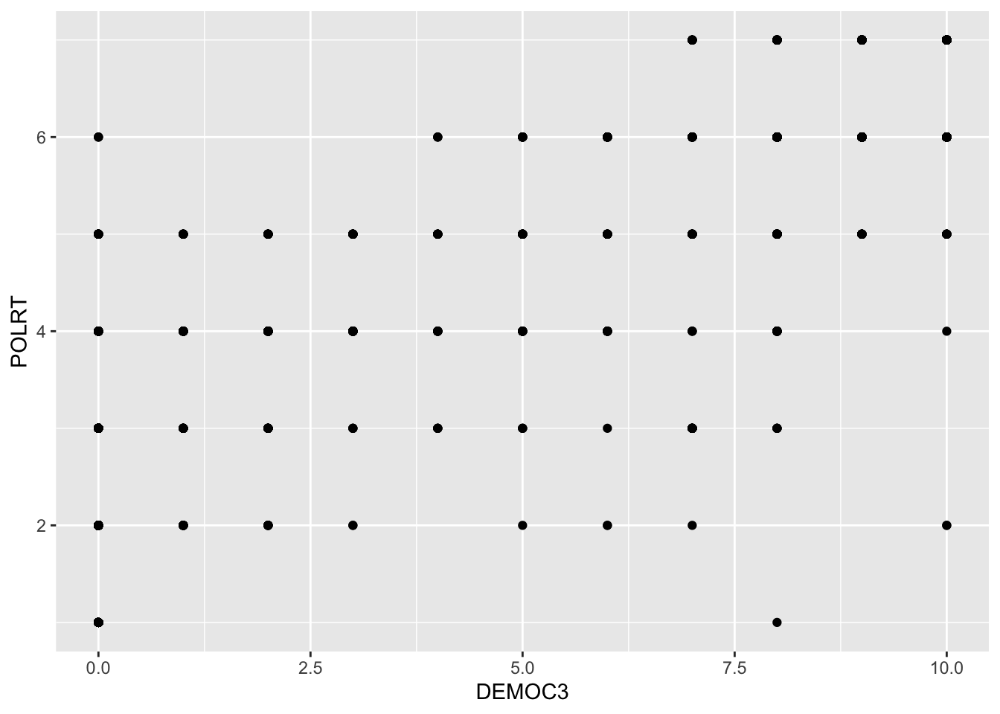
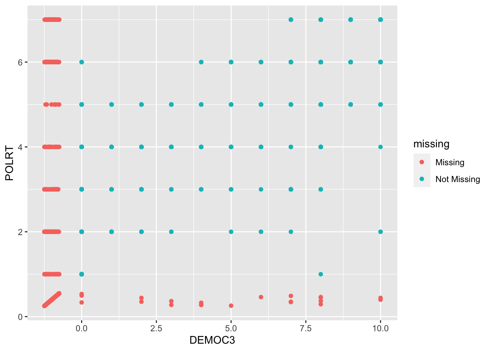

use "https://github.com/robertwwalker/Essex-Data/raw/main/ISQ99-Essex.dta"
xtset
drop if AINEW==.
xtset
* Give consideration to what we should do about the Lagged DV
drop if AILAG==.
* A note about long versus flong
mi set flong
* Note that it adds some variables; what are they?
mi describe
mi misstable summarize
* There are some logical restrictions that we are going to want.
* For example, we have some changes that need to be consistent
* with levels. We can deal with that; just calculate the changes
* after imputation.
mi register imputed DEMOC3
mi impute regress DEMOC3 PERCHPCG PERCHPOP LPOP CWARCOW IWARCOW2, add(10) dots force
* mi impute regress PCGTHOU DEMOC3 PERCHPOP LPOP CWARCOW IWARCOW2, add(20)
mi estimate: xtreg AINEW AILAG DEMOC3, fe
The Data: Poe, Tate, Keith 1999
Two objectives. Load the data and transform it into a pdata.frame for now.
Will allow R to answer many questions that stata’s xt commands make available. First, some basic summaries to get to balance.
summary(ISQ99_Essex)
IDORIGIN YEAR AI SD POLRT
Min. : 2.0 Min. :1976 Min. :1.000 Min. :1.000 Min. :1.000
1st Qu.:290.0 1st Qu.:1980 1st Qu.:2.000 1st Qu.:1.000 1st Qu.:2.000
Median :435.0 Median :1984 Median :3.000 Median :2.000 Median :3.000
Mean :446.7 Mean :1984 Mean :2.753 Mean :2.241 Mean :3.809
3rd Qu.:640.0 3rd Qu.:1989 3rd Qu.:3.000 3rd Qu.:3.000 3rd Qu.:6.000
Max. :990.0 Max. :1993 Max. :5.000 Max. :5.000 Max. :7.000
NA's :1061 NA's :587 NA's :382
MIL2 LEFT BRIT PCGNP
Min. :0.0000 Min. :0.0000 Min. :0.0000 Min. : 52
1st Qu.:0.0000 1st Qu.:0.0000 1st Qu.:0.0000 1st Qu.: 390
Median :0.0000 Median :0.0000 Median :0.0000 Median : 1112
Mean :0.2725 Mean :0.1764 Mean :0.3554 Mean : 3592
3rd Qu.:1.0000 3rd Qu.:0.0000 3rd Qu.:1.0000 3rd Qu.: 3510
Max. :1.0000 Max. :1.0000 Max. :1.0000 Max. :36670
NA's :382 NA's :393 NA's :290 NA's :443
AINEW SDNEW IDGURR AILAG SDLAG
Min. :1.000 Min. :1.000 Min. : 2.0 Min. :1.00 Min. :1.000
1st Qu.:1.000 1st Qu.:1.000 1st Qu.:290.0 1st Qu.:1.00 1st Qu.:1.000
Median :2.000 Median :2.000 Median :450.0 Median :2.00 Median :2.000
Mean :2.443 Mean :2.262 Mean :455.8 Mean :2.45 Mean :2.247
3rd Qu.:3.000 3rd Qu.:3.000 3rd Qu.:663.0 3rd Qu.:3.00 3rd Qu.:3.000
Max. :5.000 Max. :5.000 Max. :990.0 Max. :5.00 Max. :5.000
NA's :468 NA's :468 NA's :644 NA's :644
PERCHPCG PERCHPOP LPOP PCGTHOU
Min. :-95.500 Min. :-48.450 Min. :11.00 Min. : 0.050
1st Qu.: -2.545 1st Qu.: 0.910 1st Qu.:14.51 1st Qu.: 0.390
Median : 4.615 Median : 2.220 Median :15.59 Median : 1.110
Mean : 4.614 Mean : 2.193 Mean :15.48 Mean : 3.592
3rd Qu.: 11.760 3rd Qu.: 2.940 3rd Qu.:16.64 3rd Qu.: 3.510
Max. :128.570 Max. :126.010 Max. :20.89 Max. :36.670
NA's :618 NA's :293 NA's :115 NA's :443
DEMOC3 CWARCOW IWARCOW2
Min. : 0.000 Min. :0.000 Min. :0.0000
1st Qu.: 0.000 1st Qu.:0.000 1st Qu.:0.0000
Median : 0.000 Median :0.000 Median :0.0000
Mean : 3.682 Mean :0.092 Mean :0.0862
3rd Qu.: 9.000 3rd Qu.:0.000 3rd Qu.:0.0000
Max. :10.000 Max. :1.000 Max. :1.0000
NA's :793 NA's :407 NA's :380
no time variation: IDORIGIN BRIT IDGURR AILAG SDLAG PERCHPCG PERCHPOP
no individual variation: YEAR AI SD POLRT MIL2 LEFT BRIT PCGNP AINEW SDNEW AILAG SDLAG PERCHPCG PERCHPOP LPOP PCGTHOU DEMOC3 CWARCOW IWARCOW2
all NA in time dimension for at least one individual: AI SD POLRT MIL2 LEFT BRIT PCGNP AINEW SDNEW AILAG SDLAG PERCHPCG PERCHPOP LPOP PCGTHOU DEMOC3 CWARCOW IWARCOW2
all NA in ind. dimension for at least one time period: AI SD POLRT MIL2 LEFT BRIT PCGNP AINEW SDNEW AILAG SDLAG PERCHPCG PERCHPOP LPOP PCGTHOU DEMOC3 CWARCOW IWARCOW2
mplot <-ggplot(ISQ99_Essex, aes(x = DEMOC3, y = POLRT)) +geom_point()mplot

library(naniar)mplot <-ggplot(ISQ99_Essex, aes(x = DEMOC3, y = POLRT)) +geom_miss_point()mplot

Multiple Imputation: Amelia II
A simple multivariate normal is easy as long as the data are well behaved. NB: This uses none of the time series or cross-sectional dimensionality for identification.
Warning: There are observations in the data that are completely missing.
These observations will remain unimputed in the final datasets.
-- Imputation 1 --
1 2 3 4 5 6 7
-- Imputation 2 --
1 2 3 4 5 6 7 8 9
-- Imputation 3 --
1 2 3 4 5 6 7 8
-- Imputation 4 --
1 2 3 4 5 6 7 8 9 10
-- Imputation 5 --
1 2 3 4 5 6
Without simplifying, it crashes because there are id variables of different sorts and other things hiding in there, perfect multicollinearities exist. Even with them, we need a bit more work.
Transforms are Key
Using the cs and ts information with polytime/splinetime and intercs
Amelia output with 5 imputed datasets.
Return code: 1
Message: Normal EM convergence.
Chain Lengths:
--------------
Imputation 1: 20
Imputation 2: 20
Imputation 3: 20
Imputation 4: 20
Imputation 5: 20
Rows after Listwise Deletion: 2144
Rows after Imputation: 3222
Patterns of missingness in the data: 65
Fraction Missing for original variables:
-----------------------------------------
Fraction Missing
IDORIGIN 0.00000000
YEAR 0.00000000
POLRT 0.11855990
MIL2 0.11855990
LEFT 0.12197393
BRIT 0.09000621
PCGNP 0.13749224
AINEW 0.14525140
SDNEW 0.14525140
AILAG 0.19987585
SDLAG 0.19987585
PERCHPCG 0.19180633
PERCHPOP 0.09093731
LPOP 0.03569212
PCGTHOU 0.13749224
DEMOC3 0.24612042
CWARCOW 0.12631906
IWARCOW2 0.11793917
Now let’s analyze it.
Some Analysis
Not a correct model but a first start.
devtools::install_github("IQSS/ZeligChoice")library(ZeligChoice)Model.a2 <-zelig(AINEW ~ AILAG + MIL2 + LEFT + BRIT + CWARCOW + IWARCOW2 + PCGTHOU + PERCHPOP + DEMOC3, model ="ls", data = a.out2)
How to cite this model in Zelig:
R Core Team. 2007.
ls: Least Squares Regression for Continuous Dependent Variables
in Christine Choirat, Christopher Gandrud, James Honaker, Kosuke Imai, Gary King, and Olivia Lau,
"Zelig: Everyone's Statistical Software," https://zeligproject.org/
summary(Model.a2)
Model: Combined Imputations
Estimate Std.Error z value Pr(>|z|)
(Intercept) 1.040136 0.055780 18.65 < 2e-16
AILAG 0.621404 0.017965 34.59 < 2e-16
MIL2 0.110257 0.035754 3.08 0.00204
LEFT -0.074708 0.046963 -1.59 0.11166
BRIT -0.112423 0.030393 -3.70 0.00022
CWARCOW 0.532683 0.055780 9.55 < 2e-16
IWARCOW2 0.180371 0.071370 2.53 0.01150
PCGTHOU -0.016131 0.003344 -4.82 1.4e-06
PERCHPOP -0.000936 0.003508 -0.27 0.78956
DEMOC3 -0.030649 0.004348 -7.05 1.8e-12
For results from individual imputed datasets, use summary(x, subset = i:j)
Statistical Warning: The GIM test suggests this model is misspecified
(based on comparisons between classical and robust SE's; see http://j.mp/GIMtest).
We suggest you run diagnostics to ascertain the cause, respecify the model
and run it again.
Next step: Use 'setx' method